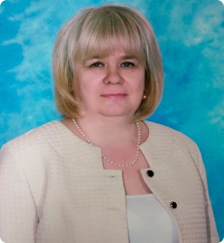

Педагоги Богучанской средней школы №3
Учителя русского языка и литературы
Безносова
Татьяна Сергеевна
Безносова Татьяна Сергеевна
Дата рождения: 18.03.1978
Стаж работы: 18 лет
Категория: отсутствует
Награды: отсутствуют
Образование: Высшее г.Новокузнецк. Кузбасская государственная педагогическая
академия «Педагогика и методика начального образования»
Курсы повышения квалификации: «Особенности введения и реализации обновленного
ФГОС
ООО» 2022. Инфоурок (обучается). Кузбасский Региональный ИПК «Русский язык и
литература» ПП №821795 2005 год
Золоткова
Наталья Николаевна
Золоткова Наталья Николаевна
Дата рождения: 16.06.1979
Стаж работы: 15 лет
Категория: первая категория
Награды: Почетная грамота администрации Богучанского района 2020; Почетная
грамота
администрации Богучанского сельского совета 2022
Образование: Средне-специальное Иркутский государственный педагогический
колледж;
Высшее Красноярский СФУ; Красноярский государственный педагогический университет
Курсы повышения квалификации: Методы и технологии организации
учебно-тренировочных
занятий по шахматам. 72 часа; ИКТ в работе педагога. 72 часа; Диплом ОДО ООО
«Издательство «Учитель» «Педагогическое образование: учитель иностранного языка
(английский язык).
Пасютина
Алёна Васильевна

Пасютина Алёна Васильевна
Дата рождения: 07.01.1971
Стаж работы: 30 лет
Категория: первая категория
Награды: министерства образования Красноярского края благодарственное письмо
2020
Образование: Высшее. Лесосибирский государственный институт – филиал КГУ
Курсы повышения квалификации: ИКТ в работе педагога. 72 часа; МЦФЭР Актион;
Компетенции учителя русского языка. 72 часа; МЦФЭР Актион
Учителя математики

Пупышева
Ирина Ояросовна
Пупышева Ирина Ояросовна
Дата рождения: 02.05.1958
Стаж работы: 41 лет
Категория: первая категория
Награды: грамота МоиН Кк; Благодарственное письмо Законодательного собрания
Красноярского края; Грамота Благодарственное письмо Министерства образования
Образование: Высшее КГПИ
Курсы повышения квалификации: ИКТ в работе педагога. 72 часа; МЦФЭР Актион;
Компетенции учителя математики. 72 часа; МЦФЭР Актион
Оствальд Тамара Владимировна
Дата рождения: 23.02.1996
Стаж работы: 36 лет
Категория: первая категория
Награды: грамота МоиН Кк; Благодарственное письмо Законодательного собрания
Красноярского края; Грамота Благодарственное письмо Министерства образования
Образование: Высшее
Курсы повышения квалификации: ИКТ в работе педагога. 72 часа; МЦФЭР Актион;
Компетенции учителя математики. 72 часа; МЦФЭР Актион
Учителя начальных классов
Соха
Таисья Фаридовна
Соха Таисья Фаридовна
Дата рождения: 02.05.1964
Стаж работы: 25 лет
Категория: соответствие
Награды: Грамота администрации МКОУ БСШ №3
Образование: Высшее КГПУ; Керенское педагогическое училище
Курсы повышения квалификации: Компетенции учителя. 72 часа; МЦФЭР Актион; ИКТ в
работе педагога. 72 часа; МЦФЭР Актион
Унжакова
Татьяна Сергеевна
Унжакова Татьяна Сергеевна
Дата рождения: 22.12.1984
Стаж работы: 16 лет
Категория: соответствие
Награды: Благодарность Управления образования Богучанского района; Грамота
администрации МКОУ БСШ №3; РУО Богучанского района
Образование: Высшее Красноярский государственный педагогический университет
Курсы повышения квалификации: Компетенции учителя. 72 часа; МЦФЭР Актион; ИКТ в
работе педагога. 72 часа; МЦФЭР Актион
Клюева
Валентина Васильевна
Клюева Валентина Васильевна
Дата рождения: 12.03.1953
Стаж работы: 47 лет
Категория: Первая
Награды: Благоарственное письмо Законодательного собрания Красноярского края
Образование: Высшее Иркутский педагогический институт
Курсы повышения квалификации: ИКТ в работе педагога.72 часа; МЦФЭР актион
Солодникова
Наталья Викторовна
Солодникова Наталья Викторовна
Дата рождения: 02.10.1965
Стаж работы: 23 лет
Категория: Первая
Награды: Грамота администрации Богучанского района; Грамота управления
образования
за качественно подготовленную работу; и т.д
Образование: Высшее Красноярский государственный педагогический институт
Курсы повышения квалификации: Компетенции учителя начальных классов. 72 часа;
МЦФЭР
Актион; ИКТ в работе педагога. 72 часа; МЦФЭР Актион
Грицай
Яна Николаевна
Грицай Яна Николаевна
Дата рождения: 17.03.1994
Стаж работы: 6 лет
Категория: соответствие
Награды: Грамота администрации Богучанского района; Грамота управления
образования
за качественно подготовленную работу; и т.д
Образование: Высшее Красноярский государственный педагогический институт
Курсы повышения квалификации: Компетенции учителя начальных классов. 72 часа;
МЦФЭР
Актион; ИКТ в работе педагога. 72 часа; МЦФЭР Актион
Учителя английского языка
Золоткова
Наталья Николаевна
Золоткова Наталья Николаевна
Дата рождения: 16.06.1979
Стаж работы: 15 лет
Категория: первая категория
Награды: Почетная грамота администрации Богучанского района 2020; Почетная
грамота администрации Богучанского сельского совета 2022
Образование: Средне-специальное Иркутский государственный педагогический
колледж; Высшее Красноярский СФУ; Красноярский государственный педагогический
университет
Курсы повышения квалификации: Методы и технологии организации
учебно-тренировочных занятий по шахматам. 72 часа; ИКТ в работе педагога. 72
часа; Диплом ОДО ООО «Издательство «Учитель» «Педагогическое образование:
учитель иностранного языка (английский язык).
Учителя химии и биологии
Борисова
Любовь Владимировна
Борисова Любовь Владимировна
Дата рождения: 12.08.1963
Стаж работы: 35 лет
Категория: соответствие
Награды: Грамота министерства Просвещения РФ; Грамота администрации Богучанского
района
Образование: Высшее Красноярский педагогический институт
Курсы повышения квалификации: Компетенции учителя. 72 часа; МЦФЭР Актион; ИКТ в
работе педагога. 72 часа; МЦФЭР Актион
Логинова
Светлана Анатольевна
Логинова Светлана Анатольевна
Дата рождения: 02.11.1971
Стаж работы: 26 лет
Категория: первая
Награды: министерства образования Красноярского края благодарственное письмо
Образование: Высшее КГПУ
Курсы повышения квалификации: Формирование межпредметных понятий как
метапредметного
результата обучения биологии географии, химии, физики в основной школе» 2016 .72
часа; КПК; ИКТ в работе педагога. 72 часа; МЦФЭР Актион
Учителя ОБЖ и географии
Логинова
Светлана Анатольевна
Логинова Светлана Анатольевна
Дата рождения: 02.11.1971
Стаж работы: 26 лет
Категория: первая
Награды: министерства образования Красноярского края благодарственное письмо
Образование: Высшее КГПУ
Курсы повышения квалификации: Формирование межпредметных понятий как
метапредметного
результата обучения биологии географии, химии, физики в основной школе» 2016 .72
часа; КПК; ИКТ в работе педагога. 72 часа; МЦФЭР Актион
Панов
Роман Викторович
Панов Роман Викторович
Дата рождения: 19.01.1995
Стаж работы: 4 лет
Категория: первая
Награды: Грамота УО за качественную подготовку к ВсОШ; Грамота УО Богучанского
района за 1 место в конкурсе «Свежий ветер»
Образование: Высшее бакалавр КГПУ им. В.П. Астафьева
Курсы повышения квалификации: «Педагогическая деятельность по физической
культуре в
средней школе в условиях реализации ФГОС ООО»; «Особенности введения и
реализации
обновленного ФГОС ООО»
Учителя физической культуры
Панов
Роман Викторович
Панов Роман Викторович
Дата рождения: 19.01.1995
Стаж работы: 4 лет
Категория: первая
Награды: Грамота УО за качественную подготовку к ВсОШ; Грамота УО Богучанского
района за 1 место в конкурсе «Свежий ветер»
Образование: Высшее бакалавр КГПУ им. В.П. Астафьева
Курсы повышения квалификации: «Педагогическая деятельность по физической
культуре в
средней школе в условиях реализации ФГОС ООО»; «Особенности введения и
реализации
обновленного ФГОС ООО»
Семешин
Сергей Владимирович
Семешин Сергей Владимирович
Дата рождения: 21.01.1987
Стаж работы: 12 лет
Категория: Соответствие
Награды: отсутствует
Образование: Высшее Красноярский государственный педагогический университет
Курсы повышения квалификации: отсутствует
Учитель музыки
Краева
Оксана Сергеевна
Краева Оксана Сергеевна
Дата рождения: 02.09.1983
Стаж работы: 19 лет
Категория: первая
Награды: Грамота главы Богучанского района; Грамота РУО Богучанского района;
Грамота
Совета депутатов Богучанского района
Образование: Высшее Красноярский государственный педагогический университет
Курсы повышения квалификации: ИКТ в работе педагога. 72 часа; МЦФЭР Актион;
Проф.
Компетентность современного учителя музыки в соответствии с проф. стандартом и
ФГОС;
Организация и контроль работы с неуспевающими; МЦФЭР Актион Академия ресурсы
образования
Учитель истории и обществознания
Ананьева
Наталья Борисовна
Ананьева Наталья Борисовна
Дата рождения: 14.11.1959
Стаж работы: 21 лет
Категория: Соответствие
Награды: Грамота администрации Богучанского района
Образование: Высшее Кемеровский институт культуры
Курсы повышения квалификации: Частное ОУ ДПО «Центр повышения квалификации по
программе «Учитель истории и обществознания»; Переподготовка «Аспекты
преподавания
истории в соответствии с обновлёнными ФГОС общего образования» 37 часов
Педагог психолог
Карпова
Наталья Сергеевна
Карпова Наталья Сергеевна
Дата рождения: 23.12.1962
Стаж работы: отсутствует
Категория: первая
Награды: отсутствуют
Образование: Высшее КГПИ
Курсы повышения квалификации: отсутствует
Учитель физики и информатики
Чуев
Евгений Иванович
Чуев Евгений Иванович
Дата рождения: 14.05.7959
Стаж работы: 41 лет
Категория: отсутствует
Награды: Благодарственное письмо Законодательного собрания КК
Образование: Высшее Абаканский государственный педагогический институт
Курсы повышения квалификации: «Особенности введения и реализации обновленного
ФГОС
ООО»